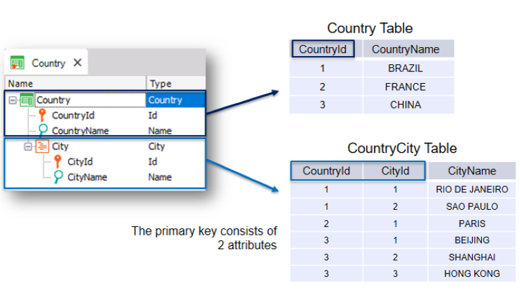

Suppose an application must take into account that countries contain a set of cities. GeneXus provides an easy way to represent a reality such as this of countries and cities. It can be implemented by adding a second level to the Country transaction. Being in the Country Transaction, while positioned on the last attribute, right-click and select Insert Level. A sublevel is opened. You can call it: City. Now there are two possible ways to name the attributes on the 2nd level. If you type a dot, you will see that GeneXus suggests “CountryCity” as a prefix, that is to say, the transaction name + the 2nd level name. You would only have to complete it by adding Id at the end, and you would have the name CountryCityId. If, on the other hand, you type inverted commas you will see that GeneXus suggests the prefix “City,” the 2nd level name. You would only have to complete it by adding Id at the end, and you would have the name CityId. This two-level Transaction indicates that each country has several cities and that each city belongs to only one country. When you save your Transaction structure, GeneXus defines (or change if it is necessary) the Web Form for this Transaction. As you can see, for each country now you can enter a group of cities. For every two-level Transaction, GeneXus determines that it has to create two physical tables:
 Note that GeneXus creates a table called Country and another table called CountryCity in the database. The second table name is taken from the Transaction name plus the name you gave to the second level. Now, look at the primary key of the second table. It is composed of two attributes: CountryId and CityId. This means that the unique identifier of the cities is composed of both attributes. |
| Backlinks |
| Toc:GeneXus - Table of contents |